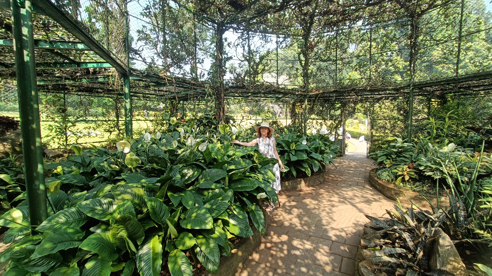
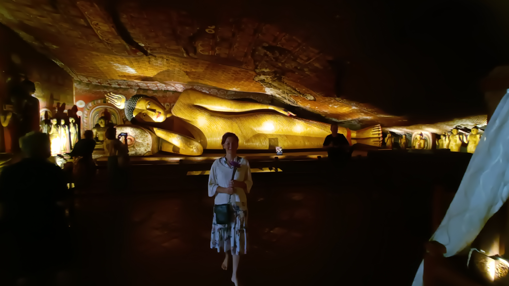
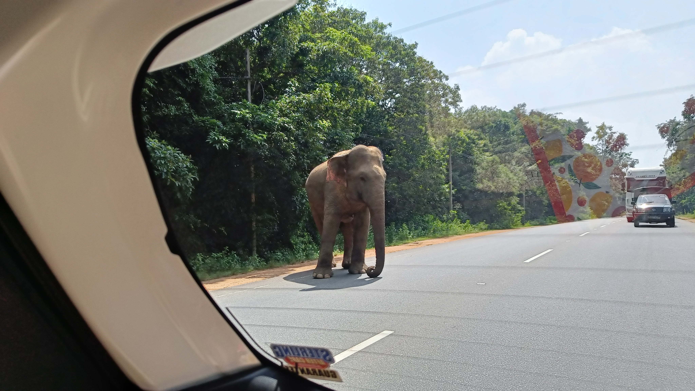
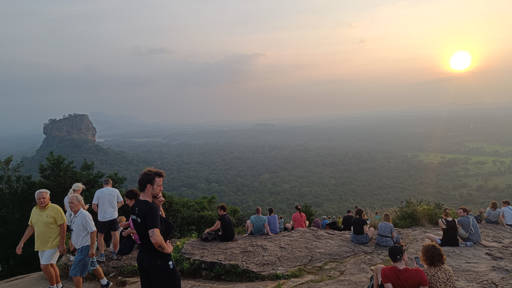

Ühel hommikul märkame, kuidas seni tühjana seisnud kõrvaltoa ümber askeldatakse ja uurime nii möödaminnes, et kas on uued külalised tulemas. Vastus on ootamatu “jah, aga vaid 6-ks päevaks”. Ei möödu tundigi ja kohal nad ongi! Natuke kohaneme sellise ootamatu arenguga, sest me peame seda kohta juba oma koduks, eks, aga oleme muidugi tänulikud oma esimese privaatse nädala eest selles vastavastatud paradiisis ja mõtleme, et äkki on nüüd paras aeg teha teoks plaanitud reis saare keskossa 😊
Jooksvalt täienev reisikiri (5)
Kandy - Polonnaruwa - Anuradhapura
Olime oma “kodustatud” srilankalaselt Ruchilt saanud teada, et tema nõbu elab riigi suuruselt teises linnas nimega Kandy ning omab hea vaatega majutuskohta. Sealt on omakorda võimalik külastada riigi iidseid pealinnu Anuradhapura (1. kuningriik) ja Polonnaruwa (2. kuningriik), põnevaid kalju sisse ehitatud templeid ning Sigiriya Lõvikaljut. Tundus nagu plaan ja minu sisemine kompass suunas mind kõigi nende vaatamisväärsuste poole. Pidevalt saatis mind küsimus, mis on neis iidsetes linnades erinevat, kas on mõtet külastada mõlemat, ja kui, siis mille järgi valida neist üks…? Toomasel oli tulemas just igakuine kreisi 20. kuupäev, aga talle tundus, et kõik on vaatamata sellele ikkagi tehtav. Tõeline “Yes, man”!
 Hea vaade maitsva söögi kõrvale
Hea vaade maitsva söögi kõrvale
Palju läks aega, et leida ajaliselt ja majanduslikult mõistlik logistiline lahendus jõudmaks Gallest Kandysse võimalikult väikese räsitatusega. Meie algne plaan põimis nii ühistranspordi odavuse (Galle-Kadawatha) kui juhiga autosõidu mugavuse ja kiiruse (Kadawatha-Kandy). Tehes oma plaanid teatavaks ka meie perenaisele Tharule, ütles ta, et tegelikult saaks ekspressbussiga Gallest otse Kandysse! Väljumine hommikul kl 6:15, sõidu kestvus ca 4h 30 min, hind 4 eur/in. Nii head varianti ei suutnud meie ei Google Maps’i ega muid kohalikke veebikeskkondi läbi tuhnides küll leida... Kõigele lisaks tuli välja, et bussijuht on nende sõber! Kuna pileteid ette broneerida ega osta ei olnud võimalik, siis lepiti kokku, et meid võetakse kindluse mõttes paarsada meetrit enne bussipeatust eelisjärjekorras peale. Hea oli, sest kui bussi mahtus ca 50 inimest, siis maha jäi veel poole bussitäie jagu rahvast – tegemist oli pühapäevaga ja palju rahvast liigub juba esmaspäeva ootuses kas tööle lähemale või Kandys asuvasse ülikooli. Õnneks ei olnud me ainsad “vipid” – enne meid oli juba 4 kohta täis, nii et liiga piinlik ei olnud, aga natuke ikka. Peaaegu kõigi mugavustega buss sõitis väga kiiresti, sisaldas isegi ühte söögi- ja vetsupeatust ja 3,5h pärast olimegi kohal. Tagasisõit sama ekspressiga pealelõunasel ajal kestis 5h, liiklus oli üsna tüütu, tohutult jõnksutamist need 3h enne kui jõudsime Colombo külje all algavale kiirteele. Kiirtee Colombost Kandyni on pooleli, kuna eelmine valitsus varastas selleks mõeldud raha ära…
Kandy’s külastasime: 1. kohalikku suurt riidekaubamaja, kus mõistliku hinnatasemega kraami kokku kuuel korrusel; 2. kõrgel mäe otsas asuvat suurt Buddha kuju; 3. budistlikku templit Temple of the Tooth: https://sridaladamaligawa.lk/, kus hoitakse Buddhale kuuluvat hammast suure pühadusega. Õhtul kogetud tseremoonia algatas minus sisemise arutelu budismi olemuse kohta ja tekitas huvi edasi uurida; 4. Kandy Botaanikaaeda, mille olemasolust ei teadnud me midagi, seega ei osanud midagi oodatagi ja, nagu ikka sellistel puhkudel, üllastas ja vaimustas meid totaalselt. Nautisime väga seda jalutuskäiku ja ilu, mis meie ees avanes; 5. teevabrikut – sellest külastusest ootasime kuidagi nagu enamat ehk see oli korralik turistikas, millisest me tavaliselt hoiduksime. Püüdes siiski leida kõiges positiivset, siis uut infot me tee valmistamise kohta kahtlemata saime ja esimest korda maitsesime ka kuldset teed (kõige kallim), millest ma muidugi ekstra vaimustusin, kui ma lugesin ka selle tee kasulikkuse kohta 😊. Veebis ka kollane tee.  Kandy Botaanikaaed: võimsad tõlvlehikud mõnusas lehtlasKandysse kohale jõudes ei olnud me teadlikud, kuidas me ikkagi nendesse iidsetesse linnadesse saame. Olime aga juba kursis, et siin on inimesi, kes valmis tasu eest vaat et kohe transporditeenust pakkuma, nii et usaldasime, et küllap me Ruchi nõo Anjana abil sobiva lahenduse leiame. Abi oligi lähemal kui arvasime – hr Anjana oli valmis meid ise 3 päeva oma autoga ringi sõidutama! Tema inglise keel on keskmisest tublisti parem, nii et autosõidu kestel oli võimalik kohaliku elu kohta infot juurde saada. Näiteks rääkis ta, kui keerulised ajad olid nad üle elanud aastatel 2019-2023 – näiteks, kuidas nad olid mitu kuud ilma elektrita, kuna eelmine võim varastas rahva vara ja viis riigi pankrotti, kuidas nad seisid kütuse järjekorras kolm päeva kuni nädala, et saada 10 liitrit kütust, kuidas vaikselt hakkas turismiraha riiki sisse tulema, ja siis tuli kovid. Nüüd on paar aastat olnud stabiilsem ja rahvas usub oma valitsejatesse ja sellesse, et korruptsiooni ei ole. Katsume ise ka mõelda ja jääda positiivseks ja näha oma panust riigi arengu toetamisse kui riiki sisenemisel tuleb välja käia 60 USD/nägu 30-päevase viisa eest ja teades, et järgmise 30-päeva eest lisandub veel 100 USD/nägu. Ja kõik vaatamisväärsused, ka loodusparki sisenemine, maksavad turistile, väikeste eranditega, 25-35 USD. Kohalike jaoks on sissepääs tasuta, mis on omamoodi super, aga mõnikord tekib ikka tunne nagu oleksid sa lihtsalt üks ringiliikuv rahakott.
 Dambulla Rock CaveEsimene peatus meie ringreisil on Dambulla Cave Temple – kõige paremini säilinud kalju sisse ehitatud kompleks, mille viie külastajatele avatud koopatempli seinad on kaetud maalingutega ning kus on kokku 153 Buddha kuju, kolm Sri Lanka kuningate kuju ja neli jumaluste kuju. Minu sisemine arutelu budismi suunal haarab siit oma järgmised mõttekillud.
Lõunasöögi osas on meil Anjanale palve viia meid pigem kohalikele mõeldud söögikohta, mis pakub taimtoidulistele piisavat valikut. Tundub, et tekitasime talle paraja väljakutse, sest ta ei olnud valmis meid ka päris igasse kohta viima, et meil seedimisega probleeme ei ilmneks. Tema tundis vaid tee peal olevaid turistidele mõeldud kohti. Lõpuks leidus üks uhke taimse valikuga söögikoht (mis osutus hotelliks), kus öeldi hinnaks 500 ruupiat nägu. Oleme sellise raha eest kohalikes kohtades söönud küll, seega olime positiivselt üllatunud, et kõik meie soovid nii kenasti täidetud saidki. Kui aga arve tuli, vaatas sealt vastu muidugi 10x suurem number! Huvitav, et me kumbki ei olnud kuulnud, et 500 ette käis veel “two thousand” 😅 Ka Anjana oli üllatunud, sest talle oli öeldud, et meile tehakse soodsam pakkumine, kuna me lihakraami ei söö. Meil kõigil oli mõnda aega veits ebamugav olla. Olen tänulik Toomasele, kes ei pelga helge moe ja naeratuse saatel väljendamast nii oma pettumust kui ka seda, et tegelikult pole hullu (kui see ei kordu 😊). Ja järgmine kord leiab Anjana meile täpselt õige koha, kus täpsustame hinna igaks juhuks kaks korda üle, ja lahkudes on rõõmsad nii meie kostitajad kui me ise.
Polonnaruwa
Näeme tee peal Polonnaruwasse oma esimest elevanti! Täiesti suvalises kohas keset autoteed, ilma teda ohjavate inimesteta – nn looduslik teetoll, kes omale sööki välja püüab pommida 😉 Elamus missugune!
 Metsik elevantPolonnaruwas otsustame kõikidele kõrvaltvaatajatele täiesti arusaamatu valiku kasuks – JALUTADA mööda iidset pealinna. Jah, ala on piklik, tuleb käia natuke edasi-tagasi ja kokku kõnnime ca 4-5 km, aga meie jaoks oli see ainumõeldav variant. KUI palju me pidime veenma ühte tuktukimeest, et me oleme täie aru juures ja et me saame sellega hakkama! Lõpuks veenab teda vaid see, kui ütleme, et meile tuleb auto kaugemasse väravasse vastu. Ehh.
 Polonnaruwa kunglikud vormid
Polonnaruwa kunglikud vormid
Oskamata midagigi ühest iidsest linnast oodata, kõnnime sel pealelõunasel ajal mööda 11. sajandil asutatud linnatänavaid ja varemeid, ilma et keegi meile midagi seletaks, ilma et meil oleks mingit arvestatavat eeltööd tehtud, ilma et oskaks siit midagi oodata. Nikerdused, vormid, maa-ala iseloom on kuninglik ja varemete taustal hakkab loovus tööle ja siinset eluolu vaimusilmas elavdama. On ahve, lehmi, koeri, kauplejaid ja samas on ka palju tühja ruumi. Oleme mõlemad väga rõõmsad, et saame jalutada, et teisi jalutajaid ei ole, et üleüldse on liiklus hõre ja saame ümbrusel lasta endasse imbuda. Siinne viimane vaatamisväärsus on Gal Viharaya, üks (väidetavalt) täiuslikumaid graniidist väljalõigatud Buddha kujusid üldse. Muide, pikali olev Buddha kuju jäädvustab hetke, mil ta oli valmis väljuma sansaarast ehk elutsükli kordumisest, tuletamaks meelde, et meis kõigis on potentsiaal tema eeskujule järgneda.
 Gal Viharaya
Gal Viharaya
Päike loojub. Tunneme südames helgust ja tänu. Oleme tõeliselt nautinud seda omadel tingimustel rännakut keset loodust, aja lugu ja pühadust.
Anuradhapura
Riigi esimeses kuningriigis otsustame giidi palkamise kasuks, et seni nähtut ja kogutud muljeid kuidagi teadlikumalt endas sünteesida. Anjana uurib piletimüügiputka juures kohalikelt ametimeestelt soovitusi ja varsti ongi meie mees leitud. Gayan on neljakümnendates inglise keele õpetaja ehk tema keeleoskus on suurepärane. Ta oskab kõneledes valida tempot ning ei külva meid üle liigse infoga.
 Stuupa
Stuupa
Saime näiteks teada, et stuupad on alati esimesed ehitised, mis tulevase pühakoja juurde ehitatakse, et neisse on peidetud mingi Buddhaga seotud reliikvia, st nende hoiustamiseks ja selle energia hoidmiseks need ehitatud ongi. Muidu on need seest täis ehitatud, st üleni telliseid täis. Stuupade ümbrus on omamoodi mediteerimise koht, kuhu sisenetakse alati paljajalu ja ümber stuupa jalutades saab olla mõtluses ja sisemises dialoogis. Liiv muudab ümbruse neutraalseks ja paljajalu oled ka paremas ühenduses maaga. Stuupasid, templeid ja Buddha kujusid on siin riigis mega palju. Tiibeti budismiga on selgeid erinevusi, kasvõi kombetalitustes, samas on algsed õpetuste sõnumid siiski kattuvad.
 Moonstone
Moonstone
Mind inspireeris väga lugu lävepaku kohta, mida nad kutsuvad kuukiviks (moonstone, sandakada pahana), millel on väljendatud sansaara ehk lõputu uuestisündide tsükkel. Sümboliseerib üleminekut ilmalikust jumalikusse. Budism. Iga kord majja sisenemisel lävepakule astudes on see sulle oma teekonna pidevaks meeldetuletuseks.
Välimisest sisemiseni: 1. kannatused (tuli) 2. eluring (loomad) 3. maised ihad (keerukas lehestiku muster) 4. luiged (puhastumine) 5. puhastunud meel (lihtsam lehestiku muster) 6. poolik lootosõis (kirgastumine)Sigiriya ja Pidurangala kalju
Valime olla ummamuudu ja Lõvikalju otsa ronimise asemel otsustame hoopis selle läheduses oleva naaberkalju otsa turnida, kust olevat hea vaade ka Lõvikaljule. Pidurangala ei olevat nii populaarne, sisse lastakse 1000 kohaliku eest ehk alla 3 euroga, Lõvikaljule saad ronida 30 euro eest. Parim on minna kas päikesetõusuks või päikeseloojanguks.
Anjana on parklasse jõudes üllatunud – paari aastaga on seegi kalju korralikult populaarsust juurde kogunud. Me ei oska muretseda, sest suurt tunglemist kuskilt ei paista. Kuni me jõuame peaaegu kohale. Siis selgub, et järjekord pole 45 minutit suurt üldse liikunud. Põhjuseks imekitsas avaus, mis tuleb päralejõudmiseks läbida. Püüame mõndade vapramate (või siis kärsitumate) eeskujul tropist mööduda kõrvalrada pidi, aga jõuame muidugi ikka selle sama ühe avause juurde, millest kõik peavad läbi mahtuma. Nüüd mõistame, miks see järjekord ei liigu… Kui alguses olid trepiastmed, mis muutusid järjest loomulikumateks kaljuastmeteks, siis päris üles jõudmiseks on vaja juba jõudu ja teiste abigi, et ületada suured kivid ja painutada end avausest läbi.
 Pidurangala viimane katsumus
Pidurangala viimane katsumus
Üles jõudes avaneb lisaks hunnitule vaatele ka hunnitu hulk rahvast – nagu laulupidu! Kalju oleks justkui pealt viltu lõigatud, aga suurt ohutunnet siiski pole, kohest veeremise tunnet ei teki 😊 Osa inimesi on eemalt vaadates liikunud küll hulljulgelt kaugele mööda seda viltust kallakut allapoole. Ja tegelikult pole mitte mingeid turvameetmeid mitte kuskil. Jagamegi üleval omavahel vastakaid tundeid – kui Toomases peegeldub just hämming olematute turvameetmete kohta, lisaks mõistmine, et peale päikeseloojangut läheb allamineku nimel sahmimiseks, mis on ohtlik, siis minus on esikohal rõõm ja tänu, et me olemegi siin, õigel ajal ja et tegelikult on see päris äge seiklus. Tubli nais- ja meesenergia tants, kumbki pole vale ega ainuõige, mõlemad on reaalsus, mõlemad on tõde.
 Vaade Pidurangala kaljult päikeseloojangu ja LõvikaljugaTagasiteel bussis loksudes on emotsioone ja mõtteid mõnus setitada. Jõudsin enda sees budismi olemusele ühtmoodi lähemale ja teisipidi tajun taas inimese poolseid moonutusi kui lihtsad asjad muudetakse pisut liiga valjuks, kirjuks ja segasekski.
Oma kodubaasi jõudes oleme jälle õnnelikud, et meil selline maandumiskoht siin ootamas on. Oli põnev seigelda ja on nii mõnus jälle “kodus” olla. Järgmiste külaliste korral ei pruugi me ära põgenedagi 😊
 Õnnis päikeseloojang kivirahnu otsas
Õnnis päikeseloojang kivirahnu otsas
📷 Pildialbum teksti juurde SIIN.
✍️ Kommenteeri või jaga oma mõtteid all!
Kommentaarid